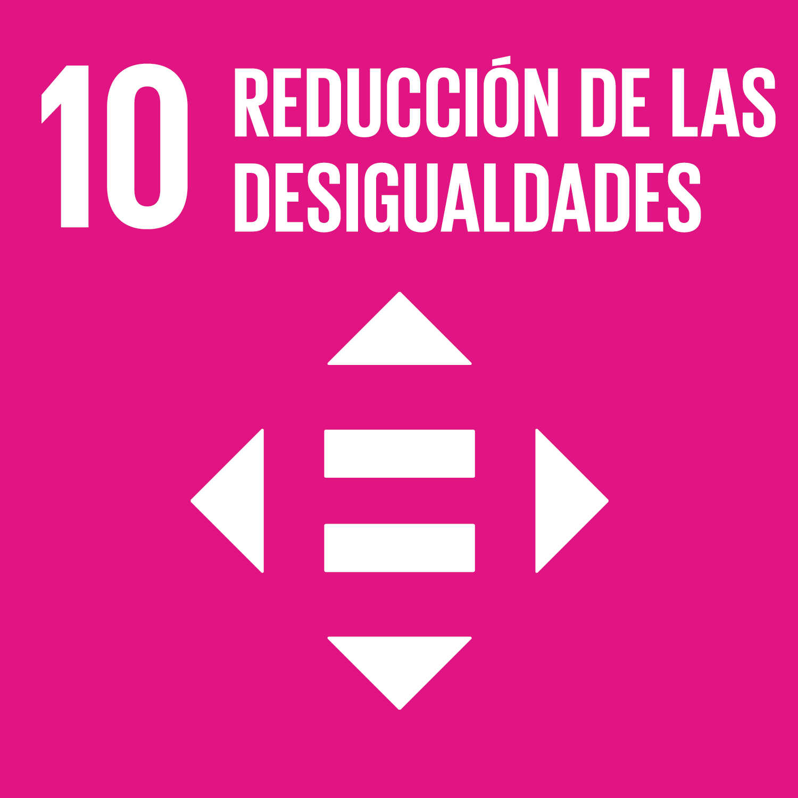
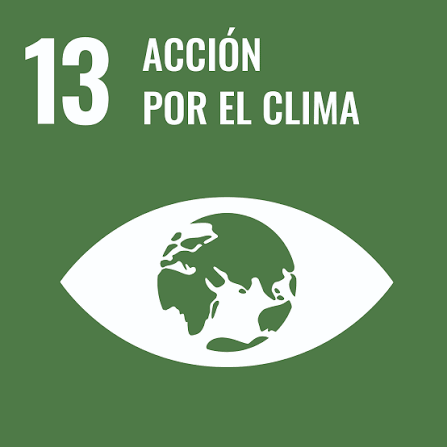

Sostenibilidad
ODS 9
Reducimos el consumo energetico mediante codigo limpio y tecnologias de alto rendimiento como Vulkan.

ODS 10
Incluimos social y digitalmente mediante un codigo de html semantico y accesible para todo tipo de usuarios, haciendo que nuestra pagina sea AA.

ODS 12
Prevenimos residuos electronicos al optimizar el codigo del motor para no renovar hardware constantemente

ODs 13
Redudimos la huella de carbono del software Implementando green software en las consultas de bases de datos y renderizados 3D
